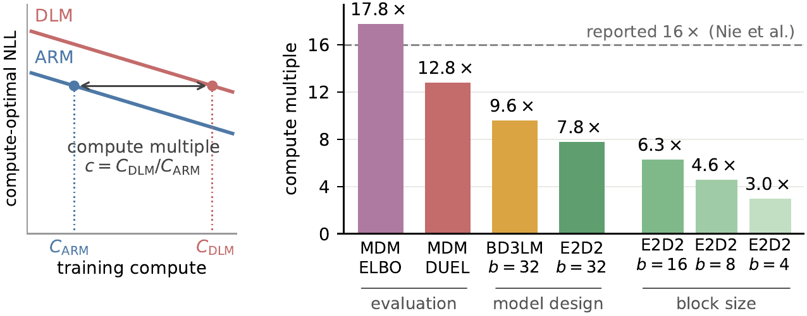
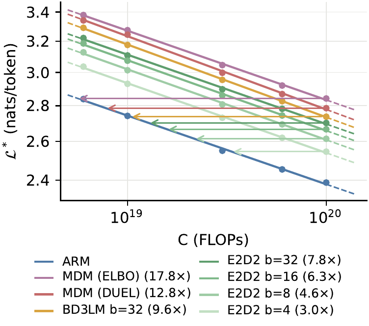
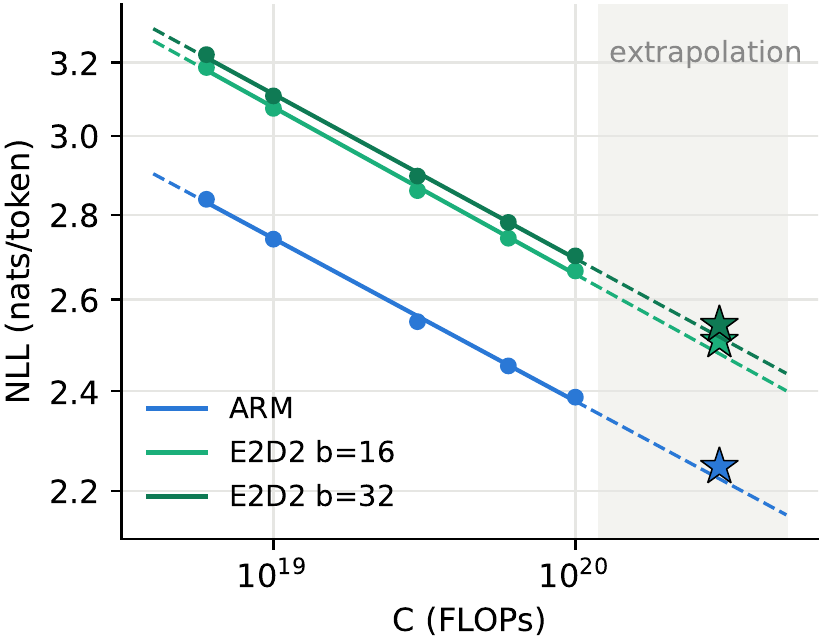
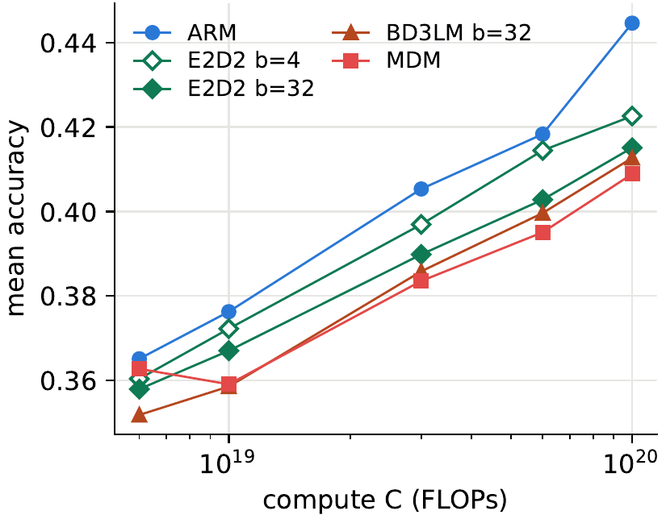

Figure 1. Left: the compute multiple c = CDLM/CARM measures how many times more training compute a diffusion language model (DLM) needs than an autoregressive model (ARM) to reach the same compute-optimal negative log-likelihood (NLL). Right: c as the evaluation (ELBO → DUEL), the model design (MDM → BD3LM → E2D2) and the block size are revised.
The 16× figure comes from the IsoFLOP study of SMDM (Nie et al., 2025), which trained a full-sequence, decoder-only masked diffusion model (MDM), scored it with its ELBO, and compared it with an ARM at matched likelihood. Since then, diffusion language models have changed in three ways that this protocol does not reflect:
We adopt all three, sweep the block sizes b ∈ {4, 8, 16, 32}, count training FLOPs exactly (including the output head and attention), and read the compute multiple within the measured range of the scaling laws rather than by extrapolation. This gives ten model variants and about 1,700 trained models across five budgets from 6×1018 to 1020 FLOPs.
We now show in more detail how each step of the revised protocol improves the compute multiple, i.e., the training efficiency of DLMs relative to ARMs:

Figure 2. Compute-optimal NLL of different model variants, solid inside the fitted range and dashed outside.
E2D2 has one design choice the other variants do not: how to split the layers between the encoder and the decoder. We swept the decoder depth at every grid point, and found that the optimal decoder fraction depends on the block size alone and is decoder-heavy:
L*dec / L ≈ 0.556 + 0.043 log2 b
In practice, one multiplies the rule by the total depth L and rounds to a whole number of decoder layers. At 132 of the 142 grid points with b ∈ {4, 8, 16, 32}, the resulting configuration lies within 10 m-nats of the best DUEL found by the sweep, including all 20 compute-optimal ones.
Beyond the fitting range. We trained the ARM and E2D2 (b ∈ {16, 32}) at a held-out budget of 3×1020 FLOPs, three times the largest fitted budget. The gap between E2D2 and the ARM predicted by the fitted laws is reproduced almost exactly.
Downstream benchmarks. On eight zero-shot benchmarks (HellaSwag, ARC-easy, PIQA, SciQ, RACE, SIQA, OpenBookQA and LAMBADA), the order of the variants in mean accuracy follows their order in likelihood.

Figure 3. Laws fitted on budgets up to 1020 FLOPs (dots); stars are the measured values at 3×1020.

Figure 4. Mean accuracy over eight benchmarks against compute for the compute-optimal model of each variant.
Our experiments run up to 3×1020 FLOPs with a single seed, and all variants share one learning-rate and batch-size configuration, inherited from SMDM for comparability. DUEL is measured under the top-1 confidence sampler only. See the paper for more details.
@article{wang2026revisiting,
title = {Revisiting the 16x Pretraining Compute Gap between Diffusion and Autoregressive Language Models},
author = {Wang, Guanghan and He, Bing and Shi, Zhan and Dumoulin, Benoit and Lu, Hanqing and Kuleshov, Volodymyr},
journal = {arXiv preprint arXiv:XXXX.XXXXX},
year = {2026}
}